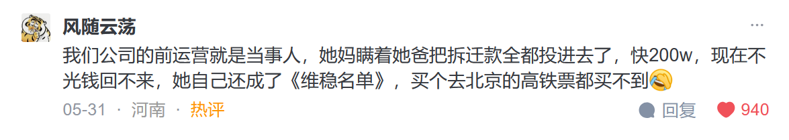

《钱的千年兴衰史》
作者简介
金菁 https://cema.cufe.edu.cn/info/1004/1083.htm
此书讨论的问题
什么样的东西可以成为钱？
所有的货币形态都是钱吗？
钱的价值来源何处？
钱为什么会贬值？
它是如何贬值的？
当然我们最关心的是有什么办法可以让它保值。我们从历史上的教训里可以看到多少今天的影子？
我们从中可以学到什么？
面对未来，我们应该怎么办？
49年前，尼克松政府宣布美元与黄金脱钩，同时实行各项增加关税、资本管制等政策；而今天美国特朗普政府将矛头指向对中国进行贸易战。所不同的是，比起特朗普，尼克松可以以一个政治家的姿态和口吻说出同样的话。今天世界各地到处出现的社会运动，也都可以在泡沫破裂后的法国大革命中找到身影。
评价： 这本书出版时间是2020年5月。
唐纳德·特朗普首次就职美国总统的时间是 2017年1月20日中午12点，当时他宣誓成为第45任美国总统
我看这本书的时间是2025年6月。 众所周知，特朗普在2025年再次成为美国总统，并且在上任后施行了很多激进的关税政策。
无国王抗议活动,No Dictators在国际上也被称为无独裁者或无暴君抗议活动,是2025年6月14日发生的一系列示威活动。No kings day无国王抗议
这本书写的东西，给了我一种穿越的感觉。书中提到的贸易战和抗议活动，在五年后的今天，又再次出现了。
第一章：用什么衡量我们的财富？
所谓钱的保值增值就是要使它的购买力不因时间的推移和地域的改变而受到损失。
1971年是一个分水岭。1947年到1971年间，原油价格无论是用美元还是黄金来衡量，都相当稳定。那是因为美元在1971年之前都是与黄金挂钩的。1971年8月15日，美国总统尼克松宣布美元与黄金脱钩。之后的原油价格用美元来衡量，开始大幅度上升。原油价格以黄金计价，还是基本稳定在1971年以前的水平。也就是说，美元相对于黄金大幅贬值了。
美国居民住房价格在1975—2017年的42年间上涨了7．72倍。如果用黄金计价，则基本没有上涨，2017年的价格还停留在1975年的水平。
在一个较长的时间段里，黄金和美元的保值能力孰优孰劣一目了然。不仅如此，黄金还有比房产更好的流动性。
从1951年到70年代初，中国的蔬菜价格几乎没有太大变化。这是一个计划经济下供给制代替市场的阶段。1978年，中国实行改革开放，首先在农村全面实施了联产承包责任制，农副产品价格成为第一个价格放开的领域。自此以后，以人民币计价的蔬菜价格可以说是大幅上升，到2014年价格最高时，是1951年价格的45倍多，而以黄金计价的蔬菜价格反而下降了42%。
第2章：什么才有资格被称为钱？
“黄金是钱，其他一切都是信用。” —————约翰·皮尔庞特·摩根（John Pierpont Morgan，1837—1913）在美国国会银行和货币委员会的听证会上这样讲
评价： 他说的就是个屁。 钱是一定时间、范围内，做一般等价物的东西。一般等价物就是可以和其他人交换商品的东西。一般等价物具有防伪、不易腐坏、不易贬值、容易分割、容易储存、便于携带的特性。 ———— from whale3070, 2025.6.17
历史案例：1907年美国的股灾
2011年7月13日召开的美国国会金融服务委员会（United States House Financial Services Subcommittee）货币政策听证会。这次听证会的发生背景正是2008年金融危机
让我们总结一下，一种商品成为钱要具备如下条件：
（1）本身是交换链条的一部分，所以自身就具有使用价值；
（2）形态不易灭失，适合囤积，并且可以长时间保持购买力；
（3）容易分割，可用作计价单位；
（4）单位体积小、价值高、便于携带；
（5）不易伪造。只有同时具备了上述这些条件，这种东西才可以说具备了被分离出来为间接交换提供媒介便利的钱的资质。
第三章
钱的替代品 ——货币
评价： 放屁。从上一节中，我们可以看到，法币具有以上的五个特性。并且广泛的投入使用。因此货币就是钱。
货币与黄金脱钩后，背后支撑它价值的是签发机构的信用。问题是，信用是会破产的。
如果我们将人类历史上广泛使用的交换媒介进行分类，可以分成商品货币（commodity money，例如黄金）、信用货币（credit money）和法币（fiat money）
信用货币和法币，我们只能把它们看成是钱的替代品。
评价： 作者认为只有黄金这种商品货币才是钱。 其他的是黄金的代替品。
我不认可这个观点。我认为只要你用一般等价物可以和其他人交换商品，那这个一般等价物，我们就把它叫做钱。
宋朝
我国的宋朝在人类历史上发明了最早的纸币——交子
超发使交子一再贬值。加上四川以外使用铜钱的地区拒收，导致交子退出流通而于大观元年（1107）被钱引所取代。据《宋史》卷三二八记载：“新钞法行，旧钞尽废，一时商贾束手或自杀。”交子改为钱引后，不到四年，“大观中，不蓄本钱而增造无艺，至引一缗，当钱十数”。［14］这就是不增加真钱储备而肆意印钞，致使钱引大幅贬值。钱引的命运最终和交子一样，于1206年被废而退出流通。
南宋时会子的出现遵循了与交子同样的逻辑：起初作为一种存款凭证进入市场，进而发展成为南宋的纸币。［15］会子于公元1161年成为官方纸币。会子与交子同为法偿货币（legal tender），但是与交子不同的是，会子没有铁钱或铜钱作为储备金。而官府的税收和俸禄都是钱会中半，也就是铜钱和会子各占一半。［16］会子超发所引起的恶性通胀不仅使会子失去了购买力，也很快葬送了大宋王朝。
元朝
元朝才是世界上第一个全面实行纯纸币系统的帝国。忽必烈于公元1260年在开平即大汗位，纪年为中统元年。“当年，他发行了蒙古政权自己的纸币——中统宝钞，同时禁止黄金、白银和铜钱作为货币流通。
中统宝钞用今天的语汇来说还是银本位制，银子虽然不能直接流通，但是政府承诺中统宝钞可以兑换白银。
只有可汗可以零成本地换取帝国内任何劳动果实，其他人的效仿罪该当死，因为这是可汗的垄断生意。
评价： 只有美国可以零成本地换取全球任何国家内任何劳动果实，其他国家的效仿罪该当死，因为这是美国的垄断生意。
为了在不明目张胆地增加税收的情况下为美国内战融资，美国国会于1862年通过《法偿货币法案》（Legal Tender Act）授权国会发行纸币——联邦券（United States Note）。由于联邦券的贬值，很多人拒绝接受用这种纸币作为支付方式。19世纪下半叶就发生了一连串官司，那些拒收联邦券的人将用这种纸币支付的一方告上法庭。但是法院裁决都是认定用这种纸币支付合法。［23］这一连串的判决也就确立了这种纸币在美国的合法地位。也就是说，你不接受也没用。
元帝国的开疆拓土堪称武力神话，但是它的财政和货币政策是个彻底的灾难，使得元帝国成为历史上中国大一统王朝中较为短命的一个。1260年起忽必烈发行的中统宝钞还是银本位的，是可以兑换银子的，不过中统宝钞运行20多年后，因为持续的通货膨胀，元朝廷又于1287年引入完全不可兑换的至元钞，宣布中统宝钞与至元钞以51兑换，并行流通，中统宝钞即刻贬值80%。
换率为：至大银钞一两兑换白银一两，兑换至元宝钞五贯，兑换中统宝钞二十五贯。忽必烈最初发行中统宝钞，规定它以两贯兑换白银一两，至此它对白银法定贬值了92%。［34］这还不算，元朝廷又于1310年开始大量铸行小面额的“至大通宝”铜钱，并诏令与历代古旧铜钱并行使用，宋代的各种铜钱按原来的名义面值流通。［35］结果流通不到两年，就因为人们囤积铜钱而抛售纸币没能在市场上流通开。［36］就这样，元武宗钱钞并行的尝试相当短命地以失败告终。
格雷钦法则（Gresham’s Law）
可以简单地理解为劣币驱除良币。［43］如果都是金属通货如金、银，当朝廷人为固定面值，而市场上同时流通足量和非足量的金属币，就同等面值而言，老百姓一定会储藏起来足量的而抛出不足量的，结果是足量金属币在市场上消失。因为不足量的金属币就面值来说是高估了的，所以尽快换成实物资产以实现高估了的购买力。
同样的道理也适用于不同货币的汇率：汇率一旦被人为固定，市场对被低估的货币的持有需求一定高过被高估的货币。
财经新闻报道居民消费价格指数（Consumer Price Index，CPI）？CPI可以被看作是通货膨胀的指数。CPI的上涨就是通货膨胀对我们所持有纸币购买力的侵蚀。
第四章 合约、利息和杠杆
虽然纸币的发明大大便利了社会经济生活，但是官府一旦急需用钱，尤其是在战争状态下，就会动用垄断的纸币发行权，因为这实在是太容易了——比起铸造铜钱来，既无成本，又十分便利。
这就是为什么打仗——这个人类历史上最昂贵的游戏——在纸币系统下一定会伴随快速攀升的通货膨胀，从而很快使纸币这个交换媒介失去价值和功能，商品交换陷入停滞，大家只能回归到以物易物的状态，最终极度的商品短缺造成社会动荡，乃至葬送整个帝国。
评价： 在《瑞克和莫蒂》这个科幻题材的动画系列中，瑞克曾经把联邦的货币由1改成了0。导致联邦没有钱、不能发工资，最后导致联邦的混乱和灭亡。从中能看出货币的稳定的重要性。
欧洲中世纪的通胀
与元朝的纸币帝国相比，金银本位币对钱币供给的约束力要强得多。
几个概念：
存管合约
常规存管合约
非常规存管合约
借贷合约
古希腊非常规存管合约下存款的挪用
四大行浙江一把手全部落马
他们的落马，凸显出一个共同特征：信贷审批权成为腐败的核心手段，从违规发放贷款、项目烂尾收“顾问费”，到股权交易、低价购房等敛财方式屡见不鲜。数据显示，2024年金融领域被查人员中，银行系统占比高达68%，其中多数涉及信贷权力滥用。
储户存在银行家那里的钱，成了银行家可运用的一部分，而且通常是一小部分，因为银行家可以加杠杆。这是如何实现的呢？用今天的银行业术语来说就是部分准备金，也就是接收存款的银行家并不认为存钱的人会同时来取钱，他们发现总是有相当一部分资金沉淀在那里。因此他们可以利用这部分资金来投资牟利，而且存款人还在毫不知情的情况下一直给银行交着保管费。这种事听上去挺可笑，但是离我们并不遥远。2005年8月，一批经纪公司客户集体诉讼状告摩根士丹利，原告在要求实物交割他们买的贵金属时，摩根士丹利无法兑现，然而原告从1986年2月19日购买之日起，就一直付着仓储费。最后摩根士丹利以440万美元私了。［20］2011年2月，类似的集体诉讼状告的是瑞士银行：原告自1984年起就向瑞银交着每月25美元的仓储费，而那些银锭条可能从未在瑞银的仓库里待过。

中世纪禁收利息的规定及其影响
在此期间，西欧地区最值得一提的突出变化就是卡罗林王朝国王查理曼大帝[1]及其后继者所颁布的涉及政治经济宗教生活各项细节的行政律法，涉及各种行政价格管制，其中就包括禁止高利贷
但是欧洲中世纪所说的高利贷的定义是任何超出本金的部分，其范围之大涵盖了所有可以收取利息的业务。
佛罗伦萨的统治者雅典公爵布瑞恩（Walter de Brienne）债台高筑，为了保证有人继续给他放贷，他于1343年至1345年连续发行政令，先是命令他所有的未偿债务都进入一项公债账项，之后又宣布这个账目下的债权人可以合法收取5%的利息，并且债务可以转让
至此，所谓的“公债基金”（意大利文：Monte Comune，英文：public fund）问世了。［48］显然，如果不这样做，后续的资金就岌岌可危。随着债务的不断膨胀，支付利息变得越来越困难，债转股的市场随即诞生了：以债务基金里的债务为资产，发行股票。然而“公债基金”的股票价格“从1427年发行价的60%掉到了1431年的35%，继而是1458年的20%”。
第五章：跨国银行的雏形 ——圣殿骑士团
圣殿骑士
十字军东征
东罗马帝国（即拜占庭帝国）
地中海贸易
坚守存管合约
代理司库、家族信托和私人理财
参加十字军东征的武士们主要有两个来源：一是定居于西欧，主要是英国和法国西部沿海的北欧海盗，即9至11世纪生活在斯堪的纳维亚半岛上的维京人（包括瑞典人、挪威人和丹麦人）。“他们是海盗和商人，因为除了这种方式以外，他们没有其他谋生手段。他们家乡的土地非常贫瘠，只能养活很少一部分人，长子可以继承父亲的农场，姐妹可以嫁给当地的地主，而剩下的年轻男子就不得不自力更生。他们所做的事情，是斯堪的纳维亚地区的过剩人口在过去几百年之中一直在做的。他们离开了家乡，去往海外寻找‘更好的生存环境’。”［15］而他们采取的方式就是侵略和抢劫：“毫不夸张地说，在整个9世纪、10世纪、11世纪这三个世纪内，居住在距海岸100英里范围内的人，没有谁能避免被杀和失去所有财产的危险。”［16］到了9世纪晚期，“他们已经将抢劫升级为大规模的占领和永久定居”，范围涵盖整个英格兰、苏格兰、爱尔兰和欧洲大陆，甚至到达俄国。从海盗职业退下来的人马本身就是极大的不稳定因素，需要给他们创造就业机会。定居在诺曼底的维京人也产生了后来十字军东征里最骁勇善战的战士。
评价： 在没有避孕和堕胎技术的时候，多余的单身男性的出路： 杀人、强奸、抢劫、偷窃。
难怪男性的犯罪率这么高，原来是遗传的。 不肯做这些犯罪的男性基因，都死掉了。 所有人都是犯罪的后代。
圣殿骑士团里的绿衣教士，就是现在的会计。
腓力四世大幅增加的税收给14世纪整个国家和人民的经济生活带来了深重的灾难：收入降低，财富缩水，工匠和商人失业。［80］他还对当时流通的金属币进行了贬值。事实上，垄断了铸币权的君主们一直在系统性地降低金币和银币的成色和重量，这一点和元帝国多印纸钞如出一辙。君主们垄断了货币的发行后，这个办法他们就不断地系统性地使用，主要有两种：一种是减轻重量，一种是夹杂劣等金属。
从13世纪中叶到整个14世纪，钱币贬值的速度非常快。［82］腓力四世更令人震惊的地方在于他贬值的力度：从1298—1299年的18个月中，他的岁收中有120万古金来自铸币收入，而所有其他岁收总共只有80万古金，也就是铸币收益占到他所有岁收的60%。［83］虽然腓力四世曾在1306年艰难地试图重新恢复币值的稳定，但1311年和佛兰德斯的战争再一次让他实行了对钱币的和大幅贬值。［84］例如，一个标准的法国古银币的含量应该是96%的银和4%的劣等金属。到了1355年腓力六世[3]的时候，屡次的贬值将这个比例变成了20%的银和80%的贱金属的劣质合金。［85］人们仅有的一点儿对冲手段就是在金银币上使用锉、剪、刮等方法，以给自己多留下点贵重金属。当然，这种行为要冒着承受因犯法而被施加的极端酷刑，但仍挡不住人们以身试法。
第6章 文艺复兴时期的杠杆 ——教皇的银行家，美第奇银行
除去印钞这个不是什么人都可以有的特权，想用钱挣钱，部分准备金制度这种杠杆手法就是不二法门。
拜占庭帝国在十字军离开后又半死不活地延续了一个多世纪，直到1453年土耳其大军攻占了帝国首都君士坦丁堡。这无疑是拜占庭帝国的灭顶之灾，却是西欧基督教地区的福报：君士坦丁堡的沦陷，使大批操着希腊语、熟悉古希腊典籍的学者流亡到了西欧。与以往的碎片式传播不同，这次他们是较为系统性地将古希腊的文化和艺术展现在西欧人面前，让人们对古代世界的兴趣油然而生。与此同时，对外贸易使得商人和手工业者这些城市自由人先富起来，以他们为主要群体的有产阶级在财富和社会政治生活中的兴起也是一个必要条件。毫无疑问，文艺复兴是从先富起来的意大利开始兴起的，这里也是从君士坦丁堡流亡而来的学者们第一个庇护所。［3］也就是说，文艺复兴的开启既需要精神食粮，也不能缺少物质基础。
在中世纪末期和文艺复兴早期的整个15世纪里，最为著名的就是意大利的美第奇家族（House of Meidici）。在这150多年里，这个家族的银行经历了五代掌门人：他们不仅是教皇的银行家，还作为赞助人和雇主与文艺复兴时期那些知名的艺术家有着密切的关系：米开罗佐（Michelozzo）、菲利普·布鲁内莱斯基（Filippo Brunelleschi）、波提切利（Sandro Botticelli）、弗拉·安吉利科（Fra Angelico）、达·芬奇（Da Vinci）、米开朗琪罗（Michelangelo Buonarroti）等，当时“欧洲享有盛名的艺术家当中，很少有人没有被美第奇家族的手指头碰过”。
美第奇银行既吸收存款也发放贷款，只是在很多情况下都看不出存款人到底是银行的债权人还是参与银行分红的生意合伙人。同样的，美第奇银行也违背了活期存款百分之百的准备金要求，把活期存款拿出去放贷。
当然，投资放贷活动使银行因挤兑而倒闭的事件在那个年代早已司空见惯。
教会对收取利息的合法性的争论和不同意见，也让银行家们有机可乘。教会对收取利息的禁令给在国内经营的中小银行带来的巨大压力使它们无以为继，但是美第奇银行的国际触角却使它大发横财，一个最重要的渠道就是通过跨境的外汇远期汇票。
如同当时很多意大利家族银行一样，外汇汇票也是美第奇家族银行的主营业务之一。用外汇交易掩盖借贷活动收取利息的外汇汇票业务在12和13世纪时就被圣殿骑士团开始运用了。
不过为了帮助大家理解，我们把外汇兑换业务分为两大类：真的和假的。真的兑换无非是两种情况：第一种，将一种金属币换成另一种金属币，例如把佛罗伦萨的金币弗罗林（florin）换成威尼斯的银币达克特（ducat），放在今天就好比我们去欧洲旅行前用人民币换欧元；第二种是标准的外汇汇票业务，比如佛罗伦萨要远途朝圣的人或外出旅行的僧侣、学生和使节先把钱存在佛罗伦萨的美第奇银行总部，佛罗伦萨的美第奇银行给这些人出具信用凭证，朝圣或旅行的人拿着银行出具的信用凭证就可以在欧洲各地的美第奇银行分行和代理行
／关系银行支取，支取的还是当地的钱币。［24］只要银行有网点或代理行的地方都可以开具汇票和兑换。这有点像现代的旅行支票，不过今天人们旅行主要是用信用卡了。
假的兑换也有两种，直译就是：干换（意大利文：cambio secco，英文：dry exchange）和虚换（意大利文：cambio fetizzio，英文：fictitious exchange）。“干换”就是只有汇票的出国旅行，而资金一直在本地；“虚换”就是连汇票都省了，不用出国转一圈。
传统外汇汇票形式我们可以这样理解，比如说，一个伦敦人要去罗马旅行，他只要把英镑存在美第奇银行伦敦分行，这里会给他开具一张汇票，上面写明美第奇银行罗马分行需要以多少汇率付给这个人多少当地的货币，这个人拿着这张汇票到罗马的美第奇分行就可以按约定的汇价提取当地的钱币了。这个换汇会有手续费，但不是一个贷款。
那么一个做进出口贸易的意大利商人在伦敦需要一笔3个月的贷款应该怎样操作呢？通常情况下，这么做需要有四方的参与：首先是在伦敦的借贷双方。因为交割要发生在另外一个国家，所以贷款的银行和借款的贸易商人在这个国外的城市都要有代理人进行记账和交割的工作。让我们来看一下图6．1，虚线箭头代表汇票的运动方向，实线箭头代表贷款资金的运动方向：此时伦敦的汇率是1英镑换威尼斯货币1．35达克特。在伦敦的美第奇银行分行有1 000英镑可以拿出来放贷，于是就在T 0这一天买了一个威尼斯商人甲开出的汇票——在这张汇票上，商人甲承诺于3个月后的T 3m这一天在威尼斯按期交割时，还款给美第奇银行在威尼斯的分行1 440达克特。一个愿买、一个愿卖，成交。
3个月过后，商人甲在威尼斯的代理人就要如约还给美第奇银行威尼斯分行1 440达克特。如果此时在伦敦的汇率与3个月前相比没有发生变化，都是1英镑换威尼斯币1．35达克特，那么美第奇伦敦分行就可以在账本的汇兑损益一栏记一笔90达克特的汇兑收益（1 440－1 350＝90），就相当于3个月的利息为6．7%的一笔贷款，年化利率在27%左右。这个利率水平和今天比起来堪称高利贷水准，但在15世纪的欧洲，并不能说是个少见的利率水平。美第奇家族的秘密账本里就时常可见到28%的年化利息。
评价： 闻所未闻。